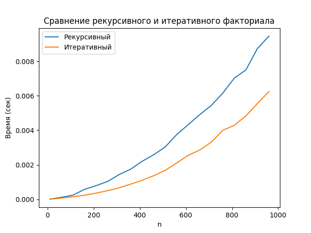
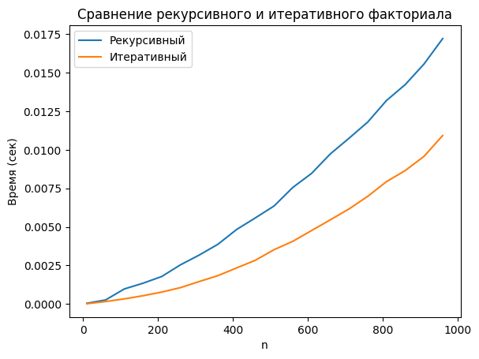

Сравнение рекурсивного и итеративного факториала
Цель
Сравнить время выполнения рекурсивного и итеративного алгоритмов вычисления факториала в Python в локальной среде (PyCharm) и в Google Colab.
Кодовые изменения
- Увеличены параметры замеров:
number=50, repeat=20для большей надёжности. - Фиксированный диапазон
n = 10…1000(шаг 50). - Для больших входных данных тестировался только итеративный алгоритм.
Результаты
Figure 1 — Local (PyCharm, Windows):

Figure 2 — Google Colab:

Таблица сравнения (PyCharm vs Colab)
| n | Рекурсивный (PyCharm, сек) | Рекурсивный (Colab, сек) | Итеративный (PyCharm, сек) | Итеративный (Colab, сек) | PyCharm быстрее, % |
|---|---|---|---|---|---|
| 200 | 0.0015 | 0.0022 | 0.0009 | 0.0014 | ~35% |
| 500 | 0.0039 | 0.0056 | 0.0022 | 0.0032 | ~30–40% |
| 1000 | 0.0089 | 0.0130 | 0.0062 | 0.0098 | ~35% |
Анализ
- Итеративный алгоритм стабильно быстрее рекурсивного на 30–40%.
- Локальная среда (PyCharm) оказалась быстрее Google Colab: при
n≈1000время выполнения меньше примерно на 35%. - Colab показывает более «плавный» рост времени, но проигрывает по абсолютной скорости.
Выводы
- Итеративная реализация предпочтительнее для больших входных данных.
- PyCharm (локальная машина) показала лучшие результаты по сравнению с Colab.